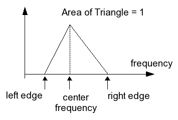

public class MelFilter extends Object
MelFrequencyFilterBank creates
mel-filters and filters spectrum data using the method filterOutput.
A mel-filter is a triangular shaped bandpass filter. When a mel-filter is constructed, the parameters
leftEdge, rightEdge, centerFreq, initialFreq, and
deltaFreq are given to the Constructor. The first three arguments to the constructor,
i.e. leftEdge, rightEdge, and centerFreq, specify the filter's slopes. The
total area under the filter is 1. The filter is shaped as a triangle. Knowing the distance between the center
frequency and each of the edges, it is easy to compute the slopes of the two sides in the triangle - the third side
being the frequency axis. The last two arguments, initialFreq and deltaFreq, identify the
first frequency bin that falls inside this filter and the spacing between successive frequency bins. All frequencies
here are considered in a linear scale.
Figure 1 below shows pictorially what the other parameters mean.
 MelFrequencyFilterBank| Constructor and Description |
|---|
MelFilter(double leftEdge,
double centerFreq,
double rightEdge,
double initialFreq,
double deltaFreq)
Constructs a filter from the parameters.
|
| Modifier and Type | Method and Description |
|---|---|
double |
filterOutput(double[] spectrum)
Compute the output of a filter.
|
public MelFilter(double leftEdge,
double centerFreq,
double rightEdge,
double initialFreq,
double deltaFreq)
throws IllegalArgumentException
leftEdge - the filter's lowest passing frequencycenterFreq - the filter's center frequencyrightEdge - the filter's highest passing frequencyinitialFreq - the first frequency bin in the pass banddeltaFreq - the step in the frequency axis between frequency binsIllegalArgumentExceptionpublic double filterOutput(double[] spectrum)
spectrum - the input power spectrum to be filteredCopyright © 2014. All rights reserved.